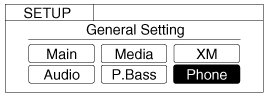
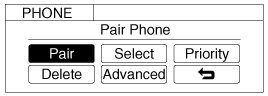
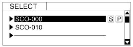
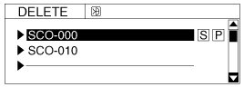
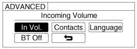
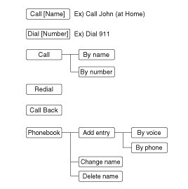

Cellular Phone Microphone: Description and Operation
Function
Audio Bluetooth System
General Features
- This audio system supports Bluetooth(R) hands-free and stereo-headset features.
- HANDS-FREE feature: Making or receiving calls wirelessly through voice recognition.
- STEREO-HEADSET feature: Playing music from cellular phones (that sup-ports A2DP feature) wirelessly.
- Voice recognition engine of the Bluetooth(R) system supports 3 types of languages:
- English
- Canadian French
- US Spanish
NOTE:
- The phone must be paired to the system before using Bluetooth(R) features.
- Only one selected (linked) cellular phone can be used with the system at a time.
- Some phones are not fully compatible with this system.
- The Bluetooth(R) word mark and logos are registered trademarks owned by Bluetooth(R) SIG, Inc. and any use of such marks by HYUNDAI is under license. A Bluetooth enabled cell phone is required to use Bluetooth(R) wireless technology.
Receiving a Phone Call
When receiving a phone call, a ringtone is audible from speakers and the audio system changes into telephone mode.
When receiving a phone call, "Incoming call"message and incoming phone number (if available) are displayed on the audio.
- To Answer a Call:
- Press the handset button on the steering wheel.
- To Reject a Call:
- Press the end button on the steering wheel.
- To Reject a Call:
- Use VOLUME buttons on the steering wheel.
- To Transfer a Call to the Phone (Secret Call):
- Press and hold the handset button on the steering wheel until the audio system transfers a call to the phone.
Talking on the Phone
When talking on the phone, "Active Call" message and the other party's phone number (if available) are displayed on the audio.
- To Finish a Call
- Press the end button on the steering wheel.
NOTE:
In the following situations, you or the other party may have difficulty hearing each other:
1. Speaking at the same time, your voice may not reach each other parties. (This is not a malfunction.) Speak alternately with the other party on the phone.
2. Keep the Bluetooth(R) volume to a low level. High-level volume may result in distortion and echo.
3. When driving on a rough road.
4. When driving at high speeds.
5. When the window is open.
6. When the air-conditioning vents are facing the microphone.
7. When the sound of the air-conditioning fan is loud.
Bluetooth(R) Audio Music Streaming
The audio system supports Bluetooth(R) A2DP (Audio Advanced Distribution Profile) and AVRCP (Audio Video Remote Control Profile) technologies.
Both profiles provide steaming of music via compatible "PAIRED" Bluetooth(R) Cellular phone.
To stream music from the Bluetooth(R) cellular phone, play your music files on your cellular phone according to your cellular phone user's manual and press the "CD/AUX" button on the audio system until "MP3 play" is displayed on the LCD.
The audio system head unit displays 'MP3 MODE'.
NOTE:
- In addition to streaming MP3 files, all music and sound files your cellular phone supports can be played by the audio system.
- Bluetooth(R) compatible cellular phones must include A2DP and AVRCP capabilities.
- Some A2DP and AVRCP compatible Bluetooth(R) cellular phones may not play music through the audio system initially.These cellular phones may need to have the Bluetooth(R) streaming enabled,for example;
i.e :Menu->File manager->Music->Option->Play via Bluetooth
- Please refer to User's Guide for your cellular phone for more information.
To cancel Bluetooth(R) cellular phone music streaming,stop music playback on the cellular phone or change the audio mode to AM/FM, XM, CD, iPod, etc.
Phone Setup
All Bluetooth(R) related operations can be performed in PHONE menu.
1. Push the "SETUP" button to enter SETUP mode.
2. Select "Phone"item by rotating the "VOL" knob, then push the "ENTER" button.

3. Select desired item by rotating the "VOL" knob, then push the "ENTER" button.

- Pairing a phone
Before using Bluetooth(R) features, the phone must be paired (registered) with the audio system. Up to 5 phones can be paired with the system.
NOTE:
- The pairing procedure of the phone varies according to each phone model. Before attempting to pair phone, please see your phone's User's Guide for instructions.
- Once pairing with the phone is completed, there is no need to pair with that phone again unless the phone is deleted manually from the audio system (refer "Deleting a Phone" section) or the vehicle's information is removed from the phone.
1. Press "SETUP" button to enter SETUP mode.
2. Select "Phone", then "Pair" in PHONE menu.
3. The audio displays "Device : [Name] passkey: 0000"
4. Search and select the device name in your mobile phone to starting the pairing process.
NOTE:
- If the phone is paired with two or more vehicles of the same model, some phones may not handle Bluetooth(R) devices of that name correctly.In this case,you may need to change the name displayed on your phone.
For example,if the vehicles' name is HMC CAR, you may need to change the name displayed on you phone from HMC_CAR to JOHNS_CAR or HMC CAR_1 to avoid ambiguity.
Refer to your phone User's Guide, or contact your cellular carrier or phone manufacturer for instructions.
- Connecting a phone
When the Bluetooth(R) system is enabled, the phone previously used is automatically selected and reconnected. If you want to select different phone previously paired, the phone can be selected through "Select Phone" menu.
Only a selected phone can be used with the hands free system at a time.
1. Press "SETUP" button to enter SETUP mode.
2. Select "Phone", then "Select" in PHONE menu.

3. Select desired phone name from the list shown.
4. The Bluetooth(R) icon appears on the upper side of audio display when a phone is connected.
- Changing Priority
If several phones are paired with the audio system, the system attempts to connect following order when the Bluetooth(R) system is enabled:
1. "Priority" checked phone.
2. Previously connected phone
3. Gives up auto connection.
1. Press "SETUP" button to enter SETUP mode.
2. Select "Phone", then "Priority" in PHONE menu.
3. Select desired phone name from the list shown.
- Deleting a Phone
The paired phone can be deleted.
- When the phone is deleted, all the information associated with that phone is also deleted (including phone book).
- If you want to use the deleted phone with the audio system again, pairing procedure must be completed once more.
1. Press "SETUP" button to enter SETUP mode.
2. Select "Phone", then "Delete" in PHONE menu.
3. Select desired phone name from the list shown.

- ADVANCED Menu
After pressing the "SETUP" button, select "Phone" menu. while in PHONE menu, select the "Advanced" menu to make Bluetooth(R) Phone settings.
(The ADVANCED menu may differ according to audio specifications.)

Incoming Volume (Bluetooth call volume adjustments)
While in ADVANCED menu, select "In Vol." Use the knob key to set the desired volume and press the "ENTER" button.
Contacts Sync (Automatic Phone book download setting)
While in ADVANCED menu, select "Contacts" To automatically save the contacts and call history in your mobile phone each time you connect a mobile device, select ON. If you do not wish for automatic download, select OFF.
It's not available to make a phone call by Bluetooth audio system while the phone book is being downloaded.
Language of Bluetooth voice recognition
While in ADVANCED menu, press "Language". To change the language, select the desired language and press the "ENTER" button.
Bluetooth system off
While in ADVANCED menu, select "BT Off" to turn off the Bluetooth(R) System.
Voice Recognition Activation
- The voice recognition engine contained in the Bluetooth(R) System can be activated in the following conditions:
- Button Activation
The voice recognition system will be active when the talk button is pressed and after the sound of a Beep.
- Active Listening
The voice recognition system will be active for a period of time when the Voice Recognition system has asked for a customer response.
- The system can recognize single digits from zero to nine while number greater than ten will not be recognized.
- The system shall cancel voice recognition mode in following cases : When pressing the talk button and saying cancel following the beep.When not making a call and pressing the end button. When voice recognition has failed 3 consecutive times.
- At any time if you say "help", the system will announce what commands are available.
Menu tree
The menu tree identifies available voice recognition Bluetooth(R) functions.

Tip
Voice Operation
To get the best performance out of the Voice Recognition System, observe the followings:
- Keep the interior of the vehicle as quiet as possible. Close the window to eliminate surrounding noise (traffic noise, vibration sounds, etc), which may disturb recognizing the voice command correctly.
- Speak a command after a beep sound within 5 seconds. Otherwise the command will not be received properly.
- Speak in a natural voice without pausing between words.
- While receiving voice commands, press the talk button on the steering wheel remote controller to terminate guidance. Voice command will convert back to waiting mode to allow the user to say a new voice command.
Making a Phone Call
- Direct Calling
1. Press the talk button.
2. Say the following command.
- Call
- Call
- Call
- Call
NOTE:
Calls can be immediately connected to contacts who name or voice tag are saved in the phone book contacts).
- Calling by Name
A phone call can be made by speaking names registered in the audio system.
1. Press talk button.
2. Say "Call".
3. Say "By name" when prompted.
4. Say desired name (in Phone book or voice tag).
5. Say desired location (phone number type). Only stored locations can be selected.
6. Say "Yes" to confirm and make a call.
Tip
A shortcut to each of the following functions is available:
1. Say "Call Name"
- Dialing by Number
A phone call can be made by dialing the spoken numbers. The system can recognize single digits from zero to nine.
1. Press the talk button.
2. Say "Call".
3. Say "By number" when prompted.
4. Say desired phone numbers.
5. Say "Dial"to complete the number and make a call.
Tip
A shortcut to each of the following functions is available:
1. Say "Dial Number"
2. Say "Dial
Phone Book (In-Vehicle)
- Adding entry by voice
Phone numbers and voice tags can be registered. Entries registered in the phone can also be transferred.
1. Press talk button.
2. Say "Phone book".
- The system replies with all available commands.
- To skip the information message, press talk again and then a beep is heard.
3. Say "Add Entry".
4. Say "By Voice" to proceed.
5. Say the name of the entry when prompted.
6. Say "Yes" to confirm.
7. Say the phone number of that entry when prompted.
8. Say "Store" if phone number input is finished.
9. Say a phone number type. "Home", "Work", "Mobile", "Other" or "Default" is available.
10. Say "Yes" to complete adding entry.
11. Say "Yes" to store additional location for this contact, or say "Cancel" to finish the process.
NOTE:
- The system can recognize single digits from zero to nine. Numbers that are ten or greater cannot be recognized.
- You can enter each digit individually or group digits together in preferred string lengths.
- To speed up input, it is a good idea to group all digits into a continuous string.
- Recommend to enter the numbers constituted an grouping within all digit numbers to dial 995 / 734 / 0000
- The display corresponding to each operation appears on the screen as follows:
Input operation example:
1. Say: "Nine, nine, five"-> Display: "995"
2. And say: "Seven, three, four"-> Display: "995734"
- Adding Entry by Phone
1. Press talk button.
2. Say "Phone book".
3. Say "Add Entry" after prompt.
4. Say "By Phone" to proceed.
5. Say "Yes" to confirm.
6. Your phone will start to transfer phone/contact list to the audio system. This process may take over 10 minutes depending on the phone model and number of entries
7. Wait till the audio displays "Transfer Complete" message.
- Changing Name
The registered names can be modified.
1. Press talk button.
2. Say "Phone book".
3. Say "Change Name" after prompt.
4. Say the name of the entry (voice tag).
5. Say "Yes" to confirm.
6. Say new desired name.
- Deleting Name
The registered names can be deleted.
1. Press talk button.
2. Say "Phone book".
3. Say "Delete Name" after prompt.
4. Say the name of the entry (voice tag).
5. Say "Yes" to confirm.
Bluetooth(R) Audio Speaker Adaptation
Speaker adaptation will improve performance of voice recognition system to a particular user voice.
This will degrade the performance for other users.
- Record
1. Press the end button for 10sec.
2. Say "Record profile".
3. Say "Yes".
4. Say the word displayed on Radio.
- Delete
1. Press the end button for 10sec.
2. Say "Delete profile".
3. Say "Yes".